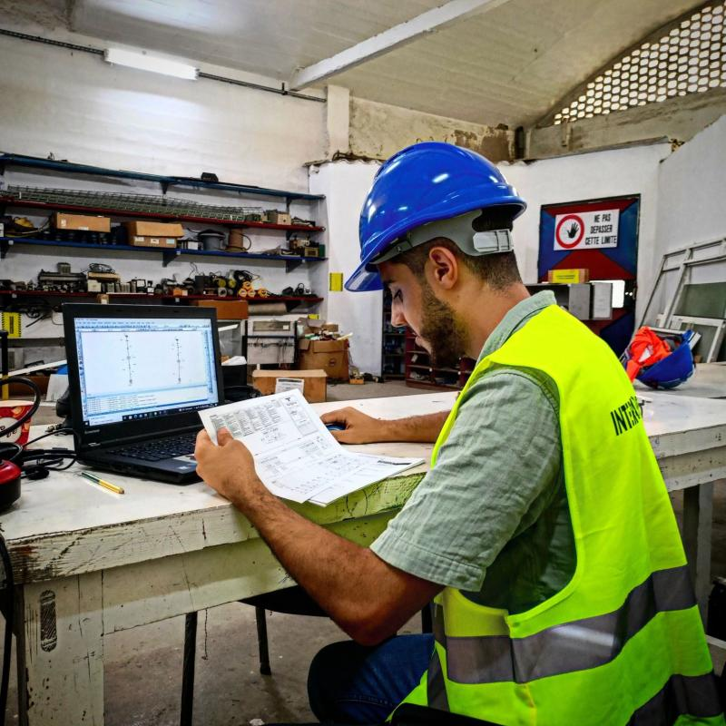
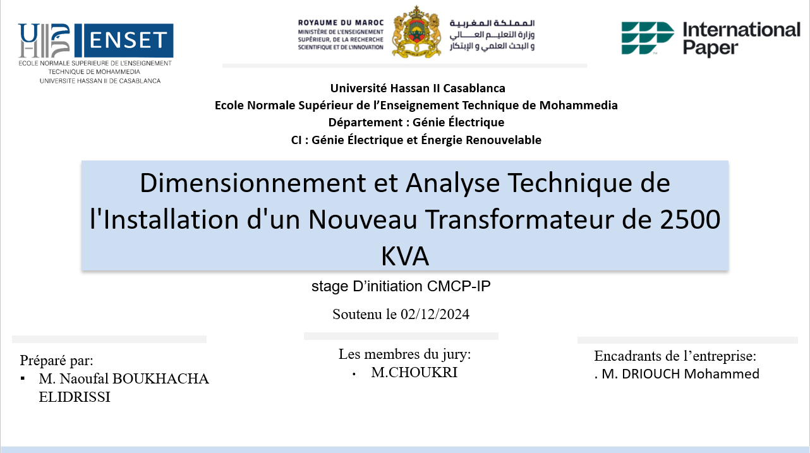
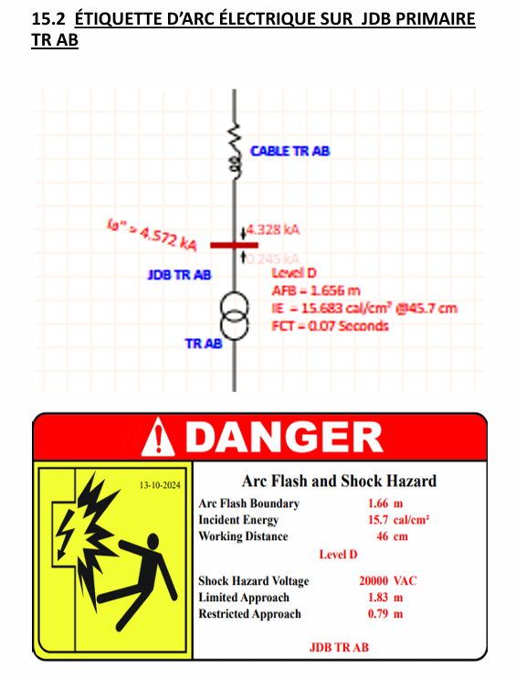

Stage d'observation — Études électriques HTA/BT
Ce stage s'est déroulé chez CMCP International Paper, filiale marocaine du groupe américain International Paper et leader national de la fabrication de papier et carton, sur son site industriel de Kénitra. L'objectif était de dimensionner et analyser l'installation électrique nécessaire au remplacement d'un transformateur existant de 2000 kVA par un nouveau transformateur de 2500 kVA, afin de garantir que l'infrastructure puisse supporter cette augmentation de capacité en toute sécurité et fiabilité.
Le dimensionnement des câbles a suivi une méthodologie normative complète, en retenant à chaque étape la section la plus contraignante :
Courant admissible en régime permanent, corrigé par les coefficients de pose, température et nature du sol
Tenue thermique du conducteur face au courant de défaut, selon la durée d'intervention des protections
Tenue thermique de l'écran en cas de défaut à la terre
Vérification sur la longueur de la canalisation (110 m, câble aluminium) pour rester dans les limites admissibles
Modélisation complète de l'installation : transformateur, disjoncteurs, jeu de barres, câble, TC
Analyse du risque d'arc électrique en primaire et secondaire, génération des étiquettes de danger réglementaires
Le transformateur de 2500 kVA (20 kV / 400 V) a été validé pour alimenter une charge de 2000 kVA, avec un courant assigné de 3608 A. L'analyse de flux de charge a montré une chute de tension minimale de 2,58 %, largement dans les normes acceptables. Côté court-circuit, les disjoncteurs HT (12,5 kA / 32,5 kA) et BT (100 kA) se sont révélés largement dimensionnés face aux courants de défaut calculés (4,8 kA en primaire, 60,4 kA en secondaire), offrant une marge de sécurité confortable. L'analyse Arc Flash a permis de générer les étiquettes de danger réglementaires, avec un niveau de protection D en primaire et E en secondaire.


